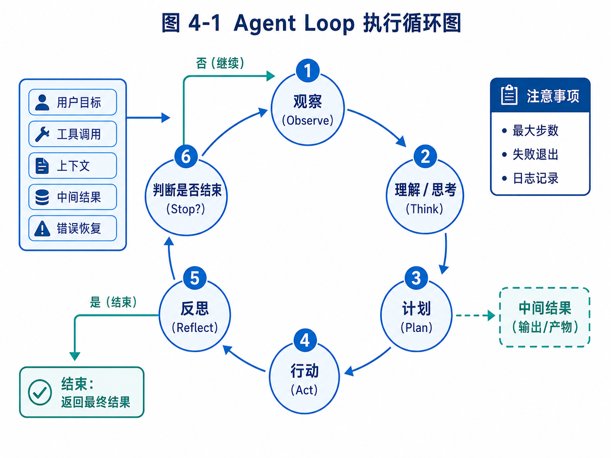

第 4 章：Agent Loop：从 Observe 到 Act
下图给出本章最核心的执行循环，后文会围绕 Observe、Think、Plan、Act、Reflect 与 Stop 逐步展开。

图 4-1 Agent Loop 执行循环图
在前面三章中，我们一直在强调：Agent 不是一个提示词，也不是一次工具调用，而是一套围绕目标持续执行的系统工程。到了本章，我们开始真正进入 Agent 内部，讨论一个最基础、也最容易被误解的核心机制：Agent Loop。
如果说工具系统是 Agent 的手脚，上下文工程是 Agent 的工作记忆，记忆系统是 Agent 的长期经验，那么 Agent Loop 就是 Agent 的心跳。它决定 Agent 如何从用户目标出发，观察当前状态，思考下一步，调用工具，接收结果，再继续推进任务，直到完成或停止。
很多初学者第一次写 Agent，通常会写出类似这样的代码：
response = model.chat("请帮我完成这个任务")
print(response)
这当然可以得到一个回答，但它不是 Agent。因为这里没有持续观察，没有行动反馈，没有任务状态，也没有下一步决策。模型只是回答了一次。
后来，开发者可能会加上工具调用：
response = model.chat(messages, tools=tools)
这已经比单轮问答更进一步。模型可以在需要时调用工具。但如果系统只是“模型请求工具，工具返回结果，模型再回答”，仍然只能算一个工具增强对话系统。真正的 Agent 需要一个循环：它必须能够在多轮工具调用和状态变化中持续推进目标。
这个循环，就是 Agent Loop。
本章会从概念、模式、实现和工程化四个层面展开。我们先理解 Agent Loop 为什么重要，再拆解 Observe、Think、Plan、Act、Reflect、Stop 等关键环节，然后实现一个最小 Agent Loop，最后讨论真实工程中必须处理的停止条件、失败恢复、日志记录、循环失控和人类干预。
本章的重点不是写一个“看起来能跑”的 Demo，而是让你真正理解 Agent 为什么需要循环，循环中每一步承担什么职责，以及如何让这个循环可控。
4.1 为什么 Agent 需要 Loop
人类完成复杂任务时，很少是一次性想清楚全部步骤，然后机械执行到底。更多时候，我们是在不断观察、判断、行动和修正。
例如，你想调研沙特市场的钢卷尺潜在客户。你可能先用搜索引擎输入关键词 “Saudi Arabia measuring tape importer”。如果结果不理想，你会换成 “hardware distributor Saudi Arabia”“tools wholesaler Riyadh”“construction tools supplier KSA”。当你打开一个公司网站时，你会观察它主营什么产品，是不是批发商，有没有联系方式，有没有进口业务信号。如果发现它只是零售小店，你会排除。如果发现它是大型五金分销商，你会记录下来。你还可能根据搜索中发现的新词调整后续搜索策略。
这整个过程不是一次推理，而是一个循环。
同样，代码开发也是循环。你接到一个 bug，先读错误日志，再搜索代码，再提出假设，再改一小处，再运行测试。如果测试失败，你再读新的错误信息，继续修正。没有一个开发者能在不了解项目的情况下，一次性写出完整正确补丁。
教育辅导也是循环。老师看学生错题，判断错因，布置练习，观察反馈，再调整教学。一次讲解不能保证学生真正掌握，必须通过持续反馈判断。
这些现实任务都具备一个共同特点：每一步行动都会改变下一步判断的依据。
Agent Loop 正是为了模拟这种“基于反馈的持续执行”。
一个最简单的 Agent Loop 可以抽象成：
while not done:
observe current state
decide next action
execute action
observe result
update state
这段伪代码看起来很简单，但它包含了 Agent 和普通模型调用的根本区别。普通模型调用只生成一次输出；Agent Loop 则让模型进入一个可持续推进任务的控制结构。
举一个具体例子。
用户输入：
帮我找到 5 家阿联酋的五金工具批发商，并判断它们是否适合推广钢卷尺。
如果只是单次回答，模型可能凭已有知识生成一个列表，但列表可能过时、虚构或无法验证。
如果是 Agent Loop，它的执行可能是：
第 1 步：理解任务，确定目标国家、客户类型、产品。
第 2 步：调用搜索工具，搜索 UAE hardware tools wholesaler。
第 3 步：读取搜索结果，发现很多是零售电商。
第 4 步：调整关键词为 building materials distributor UAE。
第 5 步：打开一个候选公司网站，提取主营业务和联系方式。
第 6 步：判断该公司是否批发五金工具。
第 7 步：记录合格客户。
第 8 步：重复搜索和筛选，直到找到 5 家或达到搜索上限。
第 9 步：生成最终表格和理由。
这里每一步都依赖前一步的结果。搜索结果不好，就换关键词；网页信息不足，就标记低置信度；客户数量不够，就继续搜索；达到目标后，就停止。
这就是 Agent Loop 的价值。
但是，Loop 也带来风险。如果没有停止条件，Agent 可能无限搜索；如果没有状态记录，它可能重复访问同一个网站；如果没有工具权限控制，它可能执行危险动作；如果没有日志，失败后无法复盘；如果没有人工确认，它可能把草稿直接发送给客户。
所以，学习 Agent Loop 不能只学“怎么循环”，还要学“如何让循环停下来、可观察、可审计、可控制”。
4.2 Agent Loop 的基本结构
一个完整的 Agent Loop 通常可以拆成六个环节：Observe、Think、Plan、Act、Reflect、Stop。
这六个词不是某个框架的固定接口，而是一种理解 Agent 行为的通用方式。不同框架可能用不同名字，有的把 Think 和 Plan 合并，有的没有显式 Reflect，有的把 Stop 做成状态图终止条件。但背后的问题是相似的。
4.2.1 Observe：观察当前状态
Observe 是 Agent 获取当前信息的过程。它回答的问题是：现在我知道什么？任务处于什么状态？外部环境给了我什么反馈？
在聊天场景中，Observe 可能只是读取用户输入。
在工具调用场景中，Observe 还包括读取工具返回结果。
在浏览器 Agent 中，Observe 可能是网页截图、DOM 文本、可点击元素列表、当前 URL 和页面标题。
在代码 Agent 中，Observe 可能是文件内容、目录结构、测试输出、git diff、错误日志。
在外贸 Agent 中，Observe 可能是搜索结果、公司官网内容、邮箱提取结果、客户评分表、历史触达记录。
举例来说，代码 Agent 运行测试后得到：
FAILED tests/test_auth.py::test_login_with_email_code
AssertionError: expected status_code 200, got 500
这就是新的 observation。Agent 必须把它纳入下一步判断，而不是继续按照原计划盲目执行。
Observe 的质量决定了 Agent 后续决策的质量。如果观察信息不准确、不完整或没有结构，Agent 很容易误判。
例如，一个浏览器 Agent 如果只能看到网页截图，但看不到可点击元素的语义，它可能不知道哪个按钮是“下一页”。一个代码 Agent 如果只看到报错最后一行，看不到完整栈信息，可能修错地方。一个外贸 Agent 如果只看到公司名称，看不到主营业务，就无法判断是否适合钢卷尺。
因此，工程上经常需要把 observation 做成结构化格式，而不是简单文本。
例如外贸客户观察可以表示成：
{
"source": "search_result",
"query": "UAE hardware distributor",
"company_name": "Example Hardware Trading LLC",
"url": "https://example.com",
"snippet": "Wholesale supplier of tools, building materials and industrial supplies in Dubai.",
"signals": ["wholesale", "tools", "Dubai", "industrial supplies"],
"uncertainties": ["no email found yet"]
}
这样的结构比一段自由文本更适合后续处理。
4.2.2 Think：理解和判断
Think 是 Agent 对当前观察进行解释的过程。它回答的问题是：这些信息意味着什么？现在应该关注什么？任务是否发生变化？
例如，外贸 Agent 观察到一个公司网站写着：
We are a leading supplier of hand tools, measuring tools, power tools and construction materials in Dubai.
它需要判断：这个公司可能适合钢卷尺。因为 hand tools 和 measuring tools 是强相关信号，Dubai 是目标地区，supplier 可能意味着分销或批发。
如果网站写的是：
We provide home decoration services and interior design solutions.
Agent 应该判断：这个公司不是理想客户，除非它有工程采购部门。
Think 不一定要暴露完整推理过程给用户。在工程中，我们更关心它输出可执行判断，例如：是否继续、调用什么工具、记录什么状态、需要什么确认。
一个安全的 Think 输出可以是：
{
"assessment": "candidate_relevant",
"reason": "Website mentions hand tools and measuring tools; target location matches UAE.",
"next_need": "extract_contact_info",
"confidence": 0.78
}
这个结构比让模型自由输出长篇思考更稳定，也更容易被系统使用。
4.2.3 Plan：决定下一步或多步计划
Plan 是把判断转化为执行路线。它回答的问题是：接下来要做什么？
有些 Agent 每次只计划一步。例如 ReAct 模式中，模型观察当前状态后，直接决定下一步工具调用。
有些 Agent 会先生成多步计划。例如 Plan-and-Execute 模式中，模型先列出整体计划，再由执行器逐步完成。
例如，对于“寻找 5 家阿联酋五金工具批发商”，多步计划可能是：
1. 搜索 UAE hardware tools wholesaler / distributor。
2. 收集前 20 个候选网站。
3. 逐个判断是否为批发商或分销商。
4. 提取公司名称、网站、主营产品、邮箱、国家城市。
5. 根据产品匹配度和联系方式质量评分。
6. 输出前 5 家，并说明理由。
但在执行中，这个计划可能需要调整。如果搜索结果主要是零售电商，Agent 应该改变搜索策略。如果候选客户不够，Agent 应该扩大关键词。如果找到大型公司但没有邮箱，Agent 应该标记“需人工补充联系人”。
所以，Plan 不是一次写死的路线，而是可以随着 observation 更新。
4.2.4 Act：执行动作
Act 是 Agent 通过工具改变状态或获取信息的过程。它回答的问题是：现在调用哪个工具？用什么参数？期望得到什么结果？
Act 可以是低风险的信息动作，例如搜索、读取文件、查询数据库。
也可以是中风险的写入动作，例如创建草稿、写入报告、修改本地文件。
也可能是高风险动作，例如发送邮件、提交代码、删除文件、支付订单。
不同风险等级的动作应该有不同控制策略。
例如：
search_web：可以自动执行。
read_file：通常可以自动执行，但要限制目录范围。
write_file：可以在工作区内自动执行，但需要记录 diff。
send_email：必须人工确认。
delete_file：必须人工确认，且需要可恢复。
execute_shell：需要命令白名单或用户确认。
在 Agent Loop 中，Act 不是“模型想做什么就做什么”。模型只能提出动作请求，系统负责验证、执行和记录。
一个工具调用请求可以表示成：
{
"tool_name": "search_web",
"arguments": {
"query": "UAE hardware tools wholesale distributor measuring tools",
"max_results": 10
},
"reason": "Need to find candidate wholesale distributors in UAE."
}
系统收到请求后，要检查工具是否存在、参数是否有效、是否超出权限、是否超过调用频率。如果通过，才真正执行。
4.2.5 Reflect：反思结果和修正策略
Reflect 是 Agent 对执行结果进行复盘和调整。它回答的问题是：刚才的动作有效吗？是否接近目标？需要改变策略吗？
很多简单 Agent 没有显式 Reflect，只是把工具结果放回上下文，让模型下一轮自然处理。但在复杂任务中，显式反思很有价值。
例如，外贸 Agent 连续搜索三次都找到零售网站，就应该反思：当前关键词太偏终端消费者，需要改用 distributor、wholesale、importer、building materials supplier 等词。
代码 Agent 修改后测试失败，也应该反思：失败是语法错误、依赖缺失、接口不兼容，还是测试预期需要更新？
教育 Agent 发现学生连续做错同类题，也应该反思：当前讲解方式可能不够，应该降低难度或回到前置知识点。
Reflect 的输出不应该只是“我应该更努力”。它需要具体调整。
例如：
{
"reflection": "Search results are dominated by retail e-commerce pages.",
"strategy_update": "Use B2B and distributor-oriented keywords; include terms such as 'LLC', 'trading', 'building materials', and 'industrial supplies'.",
"next_action": "search_web"
}
Reflect 的作用，是避免 Agent 在错误方向上机械重复。
4.2.6 Stop：判断何时停止
Stop 是 Agent Loop 中最容易被忽视、却极其重要的环节。它回答的问题是：什么时候应该结束？
停止条件可以分为目标完成、资源耗尽、失败终止、等待人工和安全终止。
目标完成是最理想情况。例如已经找到 5 家符合条件的客户，并生成表格。
资源耗尽是指达到最大步数、最大 token、最大搜索次数、最大时间或预算上限。
失败终止是指连续失败，无法继续推进。例如搜索工具不可用，网页无法访问，模型连续输出无效工具调用。
等待人工是指任务进入审批节点。例如开发信已经生成，需要用户确认是否发送。
安全终止是指发现高风险行为。例如模型试图访问禁止路径、执行危险命令、泄露敏感信息。
一个没有 Stop 设计的 Agent 很容易失控。它可能无限搜索，重复调用工具，反复修改代码，或者在没有足够证据时强行完成任务。
因此，最小 Agent Loop 中必须包含停止条件。即使只是学习 Demo，也应该设置最大步数。
例如：
MAX_STEPS = 10
for step in range(MAX_STEPS):
action = agent.decide(state)
if action.type == "final_answer":
break
result = execute_tool(action)
state.add_observation(result)
else:
state.mark_failed("Reached max steps without completion")
这个 MAX_STEPS 看起来简单，却是防止 Agent 无限循环的第一道防线。
4.3 ReAct：最经典的 Agent Loop 模式
Agent Loop 有很多实现方式，其中最经典的是 ReAct。ReAct 是 Reasoning and Acting 的缩写，核心思想是让模型在推理和行动之间交替进行。
一个典型 ReAct 循环可以表示为：
Thought: 我需要先搜索目标信息。
Action: search_web(query="...")
Observation: 搜索结果如下...
Thought: 这些结果中第 2 个更相关，我需要打开网页。
Action: open_url(url="...")
Observation: 网页内容如下...
Thought: 我已经获得足够信息，可以回答。
Final: ...
在早期 Agent 教程中，ReAct 经常以显式文本形式出现。模型被要求输出 Thought、Action、Observation、Final。这种方式非常直观，适合教学。
例如，用户问：
帮我判断 Example Hardware Trading LLC 是否适合推广钢卷尺。
ReAct 过程可能是：
Thought: 我需要了解这家公司的主营业务和客户类型。
Action: search_web(query="Example Hardware Trading LLC measuring tools")
Observation: 搜索结果显示该公司供应 hand tools, measuring tapes, power tools, building materials。
Thought: 该公司有 measuring tapes 和 hand tools 相关信号，需要查看联系方式和业务类型。
Action: open_url(url="https://example.com/about")
Observation: About 页面显示它是 Dubai 的 wholesale distributor。
Thought: 它是目标市场中的五金工具批发商，和钢卷尺高度相关。
Final: 适合推广，理由是...
ReAct 的优点是简单、灵活、容易理解。它特别适合开放探索任务，因为模型可以根据每次 observation 决定下一步。
但 ReAct 也有缺点。
第一，它容易走偏。因为每一步都由模型即时决定，如果上下文提示不清，模型可能选择无关工具。
第二，它容易重复。模型可能多次搜索相似关键词，或者反复读取同一网页。
第三，它不擅长长任务规划。对于需要几十步的任务，纯 ReAct 可能缺少整体路线。
第四，它的中间推理如果完全暴露在上下文中，会占用大量 token。
第五，它不天然提供状态管理、审批、恢复和评估。
所以，ReAct 是理解 Agent Loop 的好起点，但不能把 ReAct 等同于完整 Agent 系统。
在工程中，我们可以保留 ReAct 的“观察-行动”思想，但把输出结构化，让系统更可控。
例如，让模型输出：
{
"decision_type": "tool_call",
"tool_name": "search_web",
"arguments": {
"query": "UAE measuring tools distributor wholesale"
},
"rationale": "Need more candidates from B2B distributor sources."
}
而不是让模型自由生成一段 Thought 文本。这样系统更容易解析、验证和执行。
4.4 Plan-and-Execute：先规划，再执行
与 ReAct 相比，Plan-and-Execute 更强调先生成整体计划，再逐步执行。
它适合目标比较明确、任务链路较长、需要阶段性管理的场景。
例如用户说：
帮我研究 OpenClaw、Hermes、Claude Code 三类 Agent 产品，比较它们对构建 Athena AI 员工系统的启发。
如果用纯 ReAct，Agent 可能边搜边写，容易散乱。更合理的做法是先生成计划：
1. 明确比较维度：产品形态、任务类型、工具系统、长期运行、用户交互、安全边界。
2. 分别收集 OpenClaw 的公开信息和源码结构。
3. 收集 Hermes 的公开资料。
4. 基于公开行为分析 Claude Code 的工作流特征。
5. 生成对照表。
6. 提炼 Athena 可借鉴模块。
7. 标注哪些是已确认事实，哪些是设计推断。
然后执行器按计划逐步完成。
Plan-and-Execute 的优点是结构清晰，适合长任务，也更容易展示给用户审批。用户可以在执行前看到计划，并修改方向。
例如，外贸 Agent 开始搜索前，可以先展示：
我计划按以下策略寻找客户：
1. 先搜索 UAE/Saudi 五金工具批发商。
2. 再搜索建筑材料和工业用品分销商。
3. 排除零售电商和平台店铺。
4. 对候选客户按产品匹配度、客户类型、联系方式质量评分。
5. 只生成开发信草稿，不自动发送。
用户可以补充：
不要找 Saudi，先只找 UAE；优先 Dubai 和 Sharjah。
这样 Agent 的执行方向会更稳定。
但 Plan-and-Execute 也有问题。
第一，计划可能一开始就错。如果信息不足，模型生成的计划可能不适合实际情况。
第二，执行中环境变化，计划需要调整。如果搜索不到足够客户，原计划必须修改。
第三，计划过细会降低灵活性，计划过粗又没有指导意义。
因此，工程中常用的不是“固定计划执行到底”，而是“计划 + 执行 + 重新规划”。
可以表示成：
生成初始计划
执行当前步骤
观察结果
判断计划是否仍然有效
如果无效，更新计划
继续执行
这其实又回到了 Loop，只是 Loop 中多了一个显式计划对象。
4.5 Workflow + Agent：真实产品中更常见的模式
在真实产品里，纯 ReAct 或纯 Plan-and-Execute 都不是最终答案。更常见的是 Workflow + Agent。
也就是说，系统用工作流控制大方向，用 Agent 处理其中不确定、需要判断的节点。
例如外贸客户开发流程可以设计成：
输入任务配置
↓
生成搜索策略
↓
搜索候选客户
↓
客户网页读取
↓
客户类型判断
↓
客户评分
↓
生成开发信草稿
↓
人工审批
↓
发送或导出
↓
跟进调度
这个流程的大框架是确定的，不需要模型自由决定。但是每个节点内部可以使用 Agent 能力。
例如“客户类型判断”节点需要模型理解网页内容；“搜索策略生成”节点需要模型根据产品和国家设计关键词；“开发信草稿”节点需要模型写作；“回复理解”节点需要模型判断客户意图。
这种方式有几个好处。
首先，它更可控。系统知道任务处于哪个阶段，不会完全靠模型即兴发挥。
其次，它更容易恢复。任务失败时，可以从某个节点重新开始，而不是整个上下文丢失。
再次，它更容易审批。高风险节点可以固定设置人工确认。
最后，它更适合产品化。前端可以展示阶段进度，而不是只显示一堆模型日志。
代码 Agent 也适合这种模式：
理解需求
↓
分析代码仓库
↓
生成修改计划
↓
用户确认计划
↓
修改文件
↓
运行测试
↓
失败修复循环
↓
生成 diff
↓
用户 review
在这个流程中，Agent 可以智能分析代码和修复测试失败，但不能跳过用户确认直接提交。
教育 Agent 也是类似：
收集作业结果
↓
识别错因
↓
更新学生画像
↓
生成练习推荐
↓
老师确认
↓
推送给学生
↓
跟踪完成情况
可以看到，真实系统中的 Agent Loop 往往不是一个孤立 while 循环，而是嵌入在任务状态机和工作流中的局部循环。
这也是为什么本书后续会继续讲任务状态、长期调度、审批和可观测性。没有这些机制，Agent Loop 很难进入真实产品。
4.6 最小 Agent Loop 的实现
下面我们实现一个教学版最小 Agent Loop。它不会依赖复杂框架，也不追求生产可用，而是帮助你理解基本结构。
我们先定义几个核心对象：TaskState、Action、ToolResult、Agent。
4.6.1 TaskState：任务状态
任务状态需要记录用户目标、执行历史、当前结果和停止原因。
from dataclasses import dataclass, field
from typing import Any, Dict, List, Optional
@dataclass
class StepRecord:
step_id: int
action: Dict[str, Any]
observation: Dict[str, Any]
@dataclass
class TaskState:
goal: str
steps: List[StepRecord] = field(default_factory=list)
final_answer: Optional[str] = None
status: str = "running"
stop_reason: Optional[str] = None
def add_step(self, action: Dict[str, Any], observation: Dict[str, Any]) -> None:
self.steps.append(
StepRecord(
step_id=len(self.steps) + 1,
action=action,
observation=observation,
)
)
def mark_done(self, answer: str) -> None:
self.status = "done"
self.final_answer = answer
self.stop_reason = "goal_completed"
def mark_failed(self, reason: str) -> None:
self.status = "failed"
self.stop_reason = reason
这里的状态非常简单，但已经包含了关键思想：Agent 每一步都要留下记录，而不是只把信息放在 prompt 里。
如果后续出现问题，我们至少可以查看它调用了哪些动作、得到哪些观察、为什么停止。
4.6.2 Tool Registry：工具注册表
本章先实现一个非常简化的工具注册表，下一章会专门深入工具系统。
from typing import Callable
class ToolRegistry:
def __init__(self):
self._tools: Dict[str, Callable[..., Dict[str, Any]]] = {}
def register(self, name: str, func: Callable[..., Dict[str, Any]]) -> None:
self._tools[name] = func
def execute(self, name: str, arguments: Dict[str, Any]) -> Dict[str, Any]:
if name not in self._tools:
return {
"ok": False,
"error": f"Tool not found: {name}"
}
try:
return self._tools[name](**arguments)
except Exception as exc:
return {
"ok": False,
"error": str(exc)
}
注册几个模拟工具：
def mock_search(query: str, max_results: int = 5) -> Dict[str, Any]:
return {
"ok": True,
"results": [
{
"title": "Dubai Industrial Tools Trading LLC",
"url": "https://example.com/dubai-tools",
"snippet": "Wholesale supplier of hand tools, measuring tools and construction materials."
},
{
"title": "Home Decor UAE",
"url": "https://example.com/home-decor",
"snippet": "Interior design and home decoration services."
}
][:max_results]
}
def save_note(filename: str, content: str) -> Dict[str, Any]:
with open(filename, "w", encoding="utf-8") as f:
f.write(content)
return {
"ok": True,
"filename": filename
}
4.6.3 Agent 决策接口
在真实系统中，Agent 的 decide 方法会调用大模型。为了突出结构，我们先用一个伪决策器模拟。
class SimpleAgent:
def decide(self, state: TaskState) -> Dict[str, Any]:
if len(state.steps) == 0:
return {
"type": "tool_call",
"tool_name": "search",
"arguments": {
"query": state.goal,
"max_results": 5
}
}
last_observation = state.steps[-1].observation
if last_observation.get("ok") and "results" in last_observation:
results = last_observation["results"]
relevant = [
r for r in results
if "tools" in r["snippet"].lower() or "measuring" in r["snippet"].lower()
]
answer = "找到以下可能相关客户：\n"
for item in relevant:
answer += f"- {item['title']}：{item['snippet']}\n"
return {
"type": "final_answer",
"answer": answer
}
return {
"type": "final_answer",
"answer": "未找到足够相关信息。"
}
这个示例很简单：第一步搜索，第二步整理结果并结束。
它不是智能 Agent，但它已经展示了 Loop 的结构。
4.6.4 运行循环
最后写运行器：
class AgentRunner:
def __init__(self, agent: SimpleAgent, tools: ToolRegistry, max_steps: int = 5):
self.agent = agent
self.tools = tools
self.max_steps = max_steps
def run(self, goal: str) -> TaskState:
state = TaskState(goal=goal)
for _ in range(self.max_steps):
action = self.agent.decide(state)
if action["type"] == "final_answer":
state.mark_done(action["answer"])
return state
if action["type"] == "tool_call":
observation = self.tools.execute(
action["tool_name"],
action.get("arguments", {})
)
state.add_step(action, observation)
continue
state.mark_failed(f"Unknown action type: {action.get('type')}")
return state
state.mark_failed("Reached max steps")
return state
运行：
if __name__ == "__main__":
tools = ToolRegistry()
tools.register("search", mock_search)
tools.register("save_note", save_note)
runner = AgentRunner(SimpleAgent(), tools, max_steps=5)
state = runner.run("UAE hardware tools wholesaler measuring tape")
print("Status:", state.status)
print("Stop reason:", state.stop_reason)
print("Answer:")
print(state.final_answer)
输出可能是：
Status: done
Stop reason: goal_completed
Answer:
找到以下可能相关客户：
- Dubai Industrial Tools Trading LLC：Wholesale supplier of hand tools, measuring tools and construction materials.
这个最小例子有几个关键点：
第一，任务有状态，而不是只有一次模型回答。
第二，Agent 每一步输出 action，系统执行 action。
第三，工具结果作为 observation 回到状态。
第四，循环有最大步数，防止无限执行。
第五，最终状态记录停止原因。
这就是 Agent Loop 的最小骨架。
4.7 把模型接入 Agent Loop
上面的 SimpleAgent 是手写逻辑。真实 Agent 需要让大模型根据状态决定下一步。
但接入模型时要注意：不要让模型输出完全自由的文本，而要让它输出结构化决策。
一个简化提示词可以是：
你是一个任务执行 Agent。
你需要根据用户目标和历史观察，决定下一步动作。
你只能输出 JSON，格式如下：
如果需要调用工具：
{
"type": "tool_call",
"tool_name": "工具名",
"arguments": { ... },
"reason": "为什么调用"
}
如果任务完成：
{
"type": "final_answer",
"answer": "最终答案"
}
如果需要人工确认：
{
"type": "need_approval",
"question": "需要用户确认的问题"
}
然后把当前状态压缩后传给模型。
import json
class LLMAgent:
def __init__(self, model_client):
self.model_client = model_client
def decide(self, state: TaskState) -> Dict[str, Any]:
messages = self.build_messages(state)
raw = self.model_client.chat(messages)
return json.loads(raw)
def build_messages(self, state: TaskState) -> List[Dict[str, str]]:
history = []
for step in state.steps[-5:]:
history.append({
"step_id": step.step_id,
"action": step.action,
"observation": step.observation,
})
prompt = f"""
用户目标：{state.goal}
最近执行历史：
{json.dumps(history, ensure_ascii=False, indent=2)}
请决定下一步动作。
"""
return [
{"role": "system", "content": "你是一个安全、谨慎的任务执行 Agent。"},
{"role": "user", "content": prompt}
]
这里有几个工程重点。
第一，只传最近几步历史，避免上下文无限增长。更完整的历史应该保存在状态数据库和 trace 系统中，而不是全部塞给模型。
第二，要求模型输出 JSON，方便系统解析。真实项目还需要 JSON schema 校验和失败重试。
第三，模型只是决策者，不直接执行工具。系统必须验证工具名和参数。
第四，need_approval 是一种动作类型。Agent 不一定只有工具调用和最终回答，它也可以进入等待人工状态。
4.8 Agent Loop 中的状态设计
很多初学者写 Agent 时，会把所有信息都追加到 messages 里：
messages.append({"role": "assistant", "content": thought})
messages.append({"role": "tool", "content": tool_result})
这样做在简单 Demo 中可以，但在真实系统中会出现很多问题。
第一，上下文会越来越长，成本增加，模型注意力分散。
第二，历史信息缺少结构，难以查询和复盘。
第三，无法区分哪些是任务状态，哪些是工具结果，哪些是用户偏好。
第四，任务失败后难以恢复，因为状态只存在于 prompt 中。
因此，Agent Loop 需要显式状态设计。
一个稍微完整的任务状态可以包括：
{
"task_id": "task_001",
"goal": "Find 5 UAE hardware wholesalers for measuring tape outreach",
"status": "running",
"current_phase": "candidate_search",
"constraints": {
"target_country": "UAE",
"customer_types": ["wholesaler", "distributor"],
"excluded_types": ["retailer", "marketplace", "competitor"]
},
"artifacts": {
"candidate_leads": [],
"approved_leads": [],
"email_drafts": []
},
"visited_urls": [],
"tool_call_count": 0,
"created_at": "...",
"updated_at": "..."
}
这样的状态比聊天历史更适合长期任务。
例如，Agent 搜索到一个 URL 后，可以加入 visited_urls，避免重复访问。找到候选客户后，可以写入 candidate_leads，后续评分节点再读取。生成邮件草稿后，可以放入 email_drafts，等待审批。
状态设计的关键是：把“任务推进所需的信息”从 prompt 中抽出来，变成系统可管理的数据。
这并不意味着 prompt 不重要。模型每次决策仍然需要上下文。但上下文应该由状态动态组装，而不是把所有历史原封不动塞进去。
这就是后续“上下文工程”章节要重点讨论的内容。
4.9 停止条件的工程设计
停止条件不是简单的 max_steps。真实 Agent 至少需要多层停止机制。
4.9.1 目标完成停止
目标完成停止要求 Agent 明确判断任务已经达成。
例如用户要求“找 5 家客户”，那么找到 5 家符合条件客户并输出结构化结果后，可以停止。
但这里有一个问题：什么叫“符合条件”？如果没有定义，模型可能把低质量客户也算进去。
所以目标完成条件最好结构化。
例如：
{
"required_leads": 5,
"minimum_score": 70,
"required_fields": ["company_name", "website", "country", "business_type", "reason"]
}
这样系统可以辅助判断，而不是完全依赖模型主观判断。
4.9.2 步数停止
步数停止是最基础保护。
例如：
max_steps = 20
步数不是越大越好。步数太小，复杂任务无法完成；步数太大，可能浪费成本并增加风险。
一个合理做法是按任务类型配置：
简单问答：1–2 步
信息查询：3–5 步
研究任务：10–30 步
长任务：拆成多个子任务，每个子任务有限步数
4.9.3 成本停止
模型调用和搜索工具都有成本。生产系统必须设置预算。
例如：
{
"max_model_calls": 30,
"max_search_calls": 20,
"max_tokens": 50000,
"max_cost_usd": 2.0
}
如果达到预算，Agent 应该停止并汇报当前结果，而不是继续执行。
4.9.4 时间停止
长任务不能无限占用资源。
例如：
单次同步任务最长 2 分钟。
后台研究任务最长 30 分钟。
定时任务超过 10 分钟自动暂停并记录原因。
4.9.5 连续失败停止
如果工具连续失败，继续执行意义不大。
例如：
if consecutive_tool_errors >= 3:
state.mark_failed("Too many consecutive tool errors")
4.9.6 等待人工停止
当 Agent 遇到高风险操作或信息不足时，应该进入 waiting 状态。
例如：
{
"status": "waiting_for_user",
"reason": "Need approval before sending outreach emails",
"pending_items": ["draft_001", "draft_002"]
}
这种停止不是失败，而是人机协同的一部分。
4.10 循环失控：Agent 最常见的问题之一
Agent Loop 最大的风险之一是循环失控。
循环失控不一定表现为真正的无限循环，也可能表现为低效重复、目标漂移、工具滥用、反复修复失败、不断扩大任务范围。
4.10.1 重复搜索
外贸 Agent 可能连续搜索：
UAE hardware wholesaler
UAE hardware distributors
hardware distributor UAE
UAE tools distributor
这些关键词高度相似，如果没有去重和策略更新，Agent 会浪费调用。
解决方式包括：记录已搜索 query，计算相似度，要求新 query 必须引入新维度，例如城市、客户类型、行业目录。
4.10.2 重复访问
Agent 可能反复打开同一个网站，尤其当搜索结果重复时。
解决方式是维护 visited_urls，访问前检查。
4.10.3 目标漂移
用户要求找钢卷尺客户，Agent 搜着搜着开始研究整个五金市场趋势，最后生成宏观报告，却没有客户名单。
解决方式是每轮决策前注入任务目标和当前交付物要求，并在状态中维护 success_criteria。
4.10.4 过度反思
有些 Agent 会不断自我评价，却不执行有效动作。例如：
我需要更好地搜索。
我应该优化策略。
我需要更深入分析。
但没有具体行动。
解决方式是要求 reflection 必须输出可执行策略更新，且不能连续多轮只反思不行动。
4.10.5 修复震荡
代码 Agent 修测试失败时，可能改 A 导致 B 失败，再改 B 导致 A 失败，反复震荡。
解决方式包括 checkpoint、diff 限制、失败分类、回滚、人工介入。
循环失控的根本原因，是 Agent Loop 只有“继续”的惯性，没有足够强的“停止、收敛、纠偏”机制。
4.11 Agent Loop 的日志与可观测性
没有日志的 Agent Loop 几乎不可调试。
传统程序出错时，我们可以看异常栈、输入参数、数据库记录。Agent 出错时，如果没有记录，就很难知道它为什么做出某个决策。
至少应该记录：
task_id
step_id
timestamp
current_phase
model_input_summary
model_output
action_type
tool_name
tool_arguments
tool_result_summary
status_after_step
cost
tokens
latency
error
例如一条日志：
{
"task_id": "task_001",
"step_id": 3,
"phase": "candidate_search",
"action_type": "tool_call",
"tool_name": "search_web",
"tool_arguments": {
"query": "Dubai hand tools wholesale distributor"
},
"tool_result_summary": "10 results returned, 4 likely distributors",
"latency_ms": 1300,
"status_after_step": "running"
}
日志有几个用途。
第一，调试。你可以知道 Agent 为什么找不到客户，是搜索词不对，还是筛选规则太严格。
第二，评估。你可以统计工具调用成功率、平均步数、任务完成率。
第三，审计。高风险任务必须能回放执行过程。
第四，产品展示。用户可以看到 Agent 正在做什么，而不是面对一个黑箱。
在真实产品中，日志不只是开发者工具，也是用户信任机制。
例如，外贸 Agent 输出一个客户名单时，用户会问：你为什么认为这家公司适合我？如果系统能展示来源网页、提取信号、评分理由，用户更容易信任。如果只给一个公司名和邮箱，用户很难判断。
4.12 Agent Loop 与人机协同
Agent Loop 不应该只在“自动执行”和“最终回答”之间切换。它还需要第三种状态：等待人类。
很多真实任务都需要人类参与。
例如，外贸 Agent 找到客户后，需要用户确认是否生成开发信；生成开发信后，需要用户审核是否发送；客户回复价格太高时，需要业务员决定是否让价。
代码 Agent 修改计划生成后，需要开发者确认；修改完成后，需要开发者 review diff；测试失败超过一定次数，需要开发者介入。
教育 Agent 发现学生连续失败时，需要老师判断是否进行人工辅导。
因此，Agent Loop 中应该有 need_approval 或 waiting_for_user 动作。
例如：
{
"type": "need_approval",
"approval_type": "send_email",
"question": "是否向以下 5 家客户发送开发信？",
"items": ["draft_001", "draft_002", "draft_003"]
}
Runner 收到这个动作后，不应该继续自动执行，而应该把任务状态设为等待：
if action["type"] == "need_approval":
state.status = "waiting_for_user"
state.stop_reason = "approval_required"
state.pending_approval = action
return state
这说明人机协同不是 Agent 外围功能，而是 Agent Loop 的一部分。
一个安全 Agent 系统必须把“等待人类”作为合法状态，而不是异常。
4.13 从最小 Loop 到工程 Runtime
本章实现的是最小 Loop。真实 Agent Runtime 会复杂得多。
一个工程化 Agent Runtime 至少需要：
任务创建：接收用户目标，生成 task_id。
状态管理：保存任务状态、阶段、产物、历史。
模型决策：构造上下文，调用模型，解析结构化输出。
工具执行：校验工具、执行工具、处理超时和错误。
审批系统：处理高风险动作和人工确认。
调度系统：支持后台任务、定时任务、恢复任务。
记忆系统：读取和写入长期记忆。
日志系统：记录每一步 trace。
评估系统：判断任务质量。
用户界面：展示进度、结果、审批和历史。
可以看到，Agent Loop 是 Runtime 的核心，但不是全部。
如果把 Agent Loop 比作发动机，那么工具系统、状态系统、记忆系统、审批系统、日志系统和 UI 就是整辆车的底盘、方向盘、刹车、仪表盘和安全带。
只造一个发动机，不能上路。
这也是为什么我们要系统学习 Agent，而不是只写一个循环。
4.14 本章小结前的综合例子
最后，我们用一个完整例子串一下本章概念。
用户输入：
帮我找 3 家迪拜的五金工具批发商，适合推广钢卷尺，不要零售店。输出公司名称、网站、匹配理由。
Agent Loop 可以这样运行：
Step 1 Observe:
收到用户目标，约束是 Dubai、五金工具批发商、钢卷尺、排除零售店。
Step 1 Think:
需要先搜索候选客户。
Step 1 Act:
search_web("Dubai hardware tools wholesale distributor measuring tools")
Step 1 Observation:
返回 10 个搜索结果，其中包含批发商、零售电商和装修服务公司。
Step 2 Think:
需要筛选批发商，排除零售和服务类公司。
Step 2 Act:
open_url("https://candidate-1.com/about")
Step 2 Observation:
网页显示该公司供应 hand tools, measuring tools, building materials，服务 B2B 客户。
Step 3 Think:
该客户匹配度高，记录为候选。
Step 3 Act:
save_candidate_lead(...)
Step 4 Observe:
已有 1 家合格客户，目标是 3 家。
Step 4 Think:
继续处理下一个搜索结果。
...
Step 9 Observe:
已有 3 家合格客户，字段完整。
Step 9 Stop:
生成最终表格，任务完成。
如果执行中只找到 2 家，Agent 可以停止并说明原因：
在当前搜索范围内找到 2 家高匹配客户。第 3 家候选不足，建议扩大到 Sharjah 或使用 building materials distributor 关键词继续搜索。
这个结果比编造第 3 家更可靠。
一个好的 Agent Loop，不是保证永远完成目标，而是保证在执行过程中持续观察、合理行动、遇到边界时诚实停止。
练习题
练习 1：画出一个 Agent Loop
选择一个你熟悉的任务，例如“拼多多选品分析”“外贸客户开发”“代码 bug 修复”“学生错题复习”。
请画出它的 Agent Loop，至少包含：
- Observe：Agent 需要观察什么信息？
- Think：Agent 需要判断什么？
- Plan：是否需要多步计划？
- Act：需要调用哪些工具？
- Reflect：什么情况下需要调整策略？
- Stop：什么时候停止？
重点不是画得漂亮，而是把任务推进过程拆清楚。
练习 2：为外贸 Agent 设计停止条件
假设你要做一个外贸客户开发 Agent，任务是“每天寻找 10 个适合钢卷尺的潜在客户”。
请设计至少 6 类停止条件，包括：
- 目标完成；
- 搜索次数上限；
- 时间上限；
- 连续失败；
- 低质量结果；
- 等待人工审批。
并说明每个停止条件触发后，系统应该如何向用户汇报。
练习 3：识别循环失控
下面是一个 Agent 的执行日志：
Step 1: search "UAE hardware wholesaler"
Step 2: search "hardware wholesaler UAE"
Step 3: search "UAE tools wholesaler"
Step 4: search "tools wholesale UAE"
Step 5: search "Dubai hardware wholesaler"
Step 6: search "hardware wholesaler Dubai"
请分析：
- 这个 Agent 出现了什么问题？
- 你会增加哪些状态记录？
- 你会如何要求 Agent 更新搜索策略？
- 是否应该触发停止或人工介入？
练习 4：实现一个最小 Agent Loop
请用 Python 实现一个最小 Agent Loop，要求：
- 支持一个模拟搜索工具；
- 支持最大步数；
- 每一步记录 action 和 observation；
- 支持 final_answer；
- 达到最大步数后标记失败。
不要求接入真实模型，可以先用规则模拟 Agent 决策。
练习 5：加入人工确认状态
在练习 4 的基础上，增加一种动作类型：need_approval。
当 Agent 准备执行高风险操作时，例如“发送邮件”或“删除文件”，Runner 不应该继续执行，而应该把任务状态设置为 waiting_for_user。
请思考：等待用户确认时，任务状态中需要保存哪些信息？
检查清单
读完本章后，你应该能够确认自己理解以下问题：
[ ] 我理解为什么 Agent 需要循环，而不是单次模型调用。
[ ] 我能解释 Observe、Think、Plan、Act、Reflect、Stop 的作用。
[ ] 我知道 ReAct 的优点和局限。
[ ] 我知道 Plan-and-Execute 适合什么任务。
[ ] 我理解真实产品中常见的是 Workflow + Agent。
[ ] 我能实现一个最小 Agent Loop。
[ ] 我知道为什么必须设置最大步数和停止条件。
[ ] 我能识别重复搜索、目标漂移、修复震荡等循环失控问题。
[ ] 我理解任务状态不能只存在于 prompt 中。
[ ] 我知道人工确认应该是 Agent Loop 的合法状态。
如果你只能写出一个 while True，但说不清什么时候停止、状态存在哪里、工具调用如何记录、失败如何恢复，那么你还没有真正掌握 Agent Loop。
本章总结
Agent Loop 是 Agent 系统的核心执行机制。它让模型不再只是一次性回答问题，而是能够围绕目标持续观察、判断、行动和修正。
本章从现实任务出发，解释了为什么外贸客户开发、代码 bug 修复、教育辅导等任务都需要基于反馈的循环执行。随后，我们拆解了 Agent Loop 的六个基本环节：Observe、Think、Plan、Act、Reflect、Stop。Observe 负责获取当前状态，Think 负责解释信息，Plan 负责制定路线，Act 负责调用工具，Reflect 负责修正策略，Stop 负责判断是否结束。
我们还比较了 ReAct、Plan-and-Execute 和 Workflow + Agent 三种模式。ReAct 灵活直观，适合开放探索；Plan-and-Execute 更适合长任务和阶段性执行；Workflow + Agent 则是更接近真实产品的方式，用工作流控制大方向，用 Agent 处理不确定节点。
在实现部分，我们用 Python 写了一个最小 Agent Loop，展示了任务状态、工具注册、动作执行、观察记录和停止条件。虽然这个例子很简单，但它包含了 Agent Runtime 的基本骨架。
更重要的是，本章强调了 Agent Loop 的工程风险：循环失控、重复搜索、目标漂移、工具滥用、修复震荡和缺少日志。一个好的 Agent Loop 不只是会继续执行，更要知道如何停止、如何记录、如何等待人工、如何在失败时诚实汇报。
从下一章开始，我们将进入 Agent 的另一个核心模块：工具系统。Agent Loop 决定 Agent 如何行动，而工具系统决定 Agent 能做什么、怎么做、做到什么边界。没有工具，Agent 只能停留在语言层面；没有安全可控的工具系统，Agent 又会变成危险的自动化黑箱。